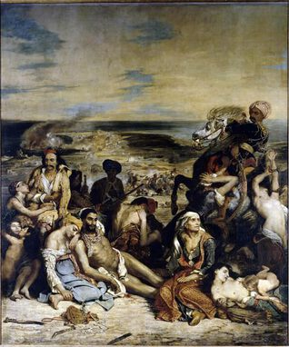

Eugene Delacroix,1798 – 1863,Romanticism,French,"Ferdinand Victor Eugène Delacroix (; French: [ø.ʒɛn də.la.kʁwa]; 26 April 1798 – 13 August 1863) was a French Romantic artist regarded from the outset of his career as the leader of the French Romantic school.As a painter and muralist, Delacroix's use of expressive brushstrokes and his study of the optical effects of colour profoundly shaped the work of the Impressionists, while his passion for the exotic inspired the artists of the Symbolist movement. A fine lithographer, Delacroix illustrated various works of William Shakespeare, the Scottish author Walter Scott and the German author Johann Wolfgang von Goethe.",https://en.wikipedia.org/wiki/Eugène_Delacroix,31
